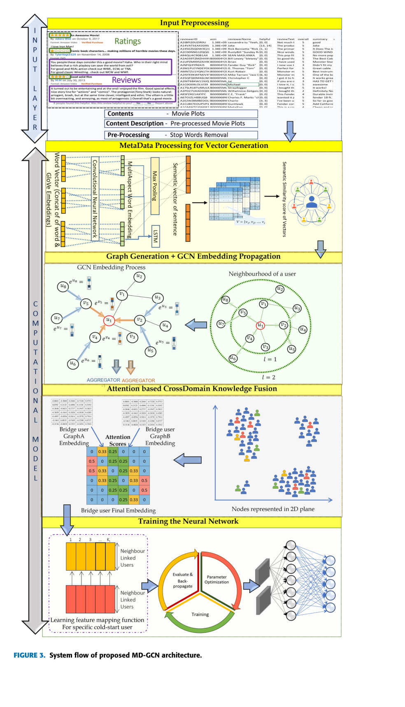

IEEE Access · 2023
Cross-Domain Recommendation Based on Metadata Using Graph Convolution Networks
MD-GCN · DOI: 10.1109/ACCESS.2023.3307015
This work addresses cold-start users and sparse user–item rating matrices by transferring preference information from a richer source domain to a sparser target domain. The framework combines metadata-derived semantic similarity with user–item interaction signals in a heterogeneous graph.
Methodology
- GloVe embeddings represent user and item metadata.
- CNN and bidirectional LSTM encode semantic features from text.
- Semantic similarity and interaction information construct user–user, item–item and user–item graph relationships.
- GCN layers propagate node embeddings; attention-based cross-domain fusion combines overlapping-user representations.
- A neural network learns the cross-domain mapping and predicts target-domain ratings.
+8.52%HR@Top10 vs DHCD
+13.13%NDCG@Top10 vs DHCD
K = 40Best neighbourhood size reported
Evaluation
Experiments use Amazon Movies as the richer source domain and Amazon Books / Amazon Music as target domains. The paper reports improvements over compared cross-domain baselines using Hit Ratio, nDCG, MAE and RMSE, including evaluation under different sparsity and holdout settings.

System flow of the proposed MD-GCN architecture. Reproduced unmodified from Khan et al., IEEE Access (2023), under CC BY-NC-ND 4.0. © IEEE. Source: published article.